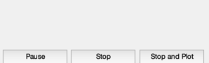
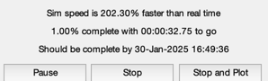
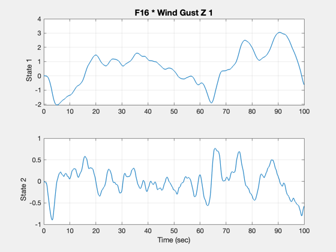

See the response of an F16 to a gust using a state space model.
------------------------------------------------------------------------
See also QECI, VTToVB, AC, ACBuild, ACInit, StateSpacePlot, ACEngEq,
@acstate/acstate.m, WindGust, CToD, PropStateSpace, TimeGUI
------------------------------------------------------------------------
Contents
Global for the time GUI
global simulationAction
simulationAction = ' ';
Global for the HUD
global hUDOutput
hUDOutput = struct('pushbutton1',0,'pushbutton2',0,'checkbox1',0,...
'checkbox2',0,'checkbox3',0);
Select actuator
actuatorName = 'elevator';
F16 database
d = ACBuild('F16');
d.theta0 = 0;
d.wPlanet = [0;0;0];
d.actuator.name = [];
d.aero.name = 'ACAero';
d.engine.name = 'ACEngine';
d.rotor.name = [];
d.sensor.name = 'ACSensor';
d.disturb.name = [];
Load the standard atmosphere
d.atmData = load('AtmData.txt');
d.atmUnits = 'eng';
Control
d.control.throttle = 0.1485;
d.control.elevator = -1.931;
d.control.aileron = -7e-8;
d.control.rudder = 8.3e-7;
Initial state vector
alpha = 0.03936;
beta = 4.1e-9;
vT = 502;
v = VTToVB( vT, alpha, beta );
cG = [0.35;0;0];
r = [2.092565616797901e+07+100;0;0];
eulInit = [0;0.03936;0.00];
q = QECI( r, eulInit );
w = [0;0;0];
wR = 160;
engine = ACEngEq( d, v, r );
mass = 1/1.57e-3;
inertia = [9497;55814;63100;0;-982;0];
actuator = [];
sensor = [];
flex = [];
disturb = [];
Initial time and state
t = 0;
x = acstate( r, q, w, v, wR, mass, inertia, cG, engine, actuator, sensor, flex, disturb );
Initialize the model
dT = 0.1;
d = ACInit( x, d );
gLin = AC( x, 0, 0, d, 'linalpha');
gGust = WindGust( 1750, 502, struct('u',10,'v',10,'w',10), 1, 'state' );
g = getsub( gLin, [11 8], 2, 1 )*gGust.gZ;
g = CToD( g, dT, 'z' );
Initialize the plots
nSim = 1000;
plots.x = 3:4;
plots.g = g;
dPlot = StateSpacePlot( 'init', plots, nSim, nSim );
Initialize the time display
tToGoMem.lastJD = 0;
tToGoMem.lastStepsDone = 0;
tToGoMem.kAve = 0;
nTTGo = 10;
[ ratioRealTime, tToGoMem ] = TimeGUI( nSim, 0, tToGoMem, 0, dT, 'F16 Simulation' );

Initialize the state
x = zeros(4,1);
for k = 1:nSim
if( floor(k/nTTGo) == k/nTTGo )
[ ratioRealTime, tToGoMem ] = TimeGUI( nSim, k, tToGoMem, ratioRealTime, dT );
end
u = randn;
dPlot = StateSpacePlot( 'store', x, [], u, dPlot );
x = PropStateSpace( g, x, u );
switch simulationAction
case 'pause'
pause
simulationAction = ' ';
case 'stop'
return;
case 'plot'
break;
end
end

Plot the results
StateSpacePlot( 'plot', dPlot );
